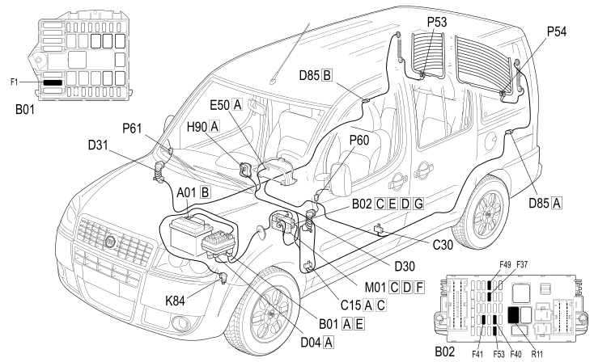

E3030 DEMISTING REARSCREEN AND REAR VIEW MIRRORS - COMPONENT LOCATION
- Path
- Electrical equipment > 1 ELECTRICAL FUNCTIONS > E30 ELECTRICALLY ACTIVATED DEVICES > E3030 HEATED REAR WINDSCREEN AND DOOR MIRROR DEFROSTING > E3030 DEMISTING REARSCREEN AND REAR VIEW MIRRORS - COMPONENT LOCATION
- Kind
- component location drawing
- Applies to
- engines: 1.4 8v, 1.6 16v, 1.3 JTD 16V, 1.9 JTD 8V; production: da 12/03; only with equipment: MY 2005
- Interactive page
- https://sloeber94.github.io/elrnDB-fDbl/en/#/223001930
Applies to: engines: 1.4 8v, 1.6 16v, 1.3 JTD 16V, 1.9 JTD 8V; production: da 12/03; only with equipment: MY 2005

Component code | Description | Reference to the assembly |
|---|---|---|
JUNCTION UNIT | ||
JUNCTION UNIT UNDER DASHBOARD | ||
DASHBOARD EARTH, DRIVER'S SIDE | ||
LEFT REAR EARTH | ||
FRONT/ENGINE COUPLING | ||
REAR/DRIVER'S FRONT DOOR COUPLING | ||
REAR/PASSENGER FRONT DOOR COUPLING | ||
TAILGATE/REAR SEAL | ||
INSTRUMENT PANEL | ||
IGNITION SWITCH | ||
SWITCH CONTROL UNIT | ||
SPEEDOMETER SENSOR | ||
BODY COMPUTER | ||
RIGHT HEATED REAR WINDSCREEN | ||
LEFT HEATED REAR WINDSCREEN | ||
LEFT DOOR MIRROR | ||
RIGHT DOOR MIRROR |
Topics linked from this page (24)
- 1060G pressure pump electric control
- 2180A milometer control
- 5505A multi-function components
- 5520A ignition switch
- 5560B analogue control panel
- 7005R front door mirrors
- 7035B rear window
- B001 JUNCTION UNIT
- B002 JUNCTION UNIT UNDER DASHBOARD
- C015 DASHBOARD EARTH, DRIVER'S SIDE
- C030 LEFT REAR EARTH
- D004 FRONT/ENGINE COUPLING
- D030 REAR/DRIVER'S FRONT DOOR COUPLING
- D031 REAR/PASSENGER FRONT DOOR COUPLING
- D085 TAILGATE/REAR SEAL
- E050 INSTRUMENT PANEL
- H001 IGNITION SWITCH
- H090 SWITCH CONTROL UNIT
- K84 SPEEDOMETER SENSOR
- M001 BODY COMPUTER
- P053 RIGHT HEATED REAR WINDSCREEN
- P054 LEFT HEATED REAR WINDSCREEN
- P060 LEFT DOOR MIRROR
- P061 RIGHT DOOR MIRROR